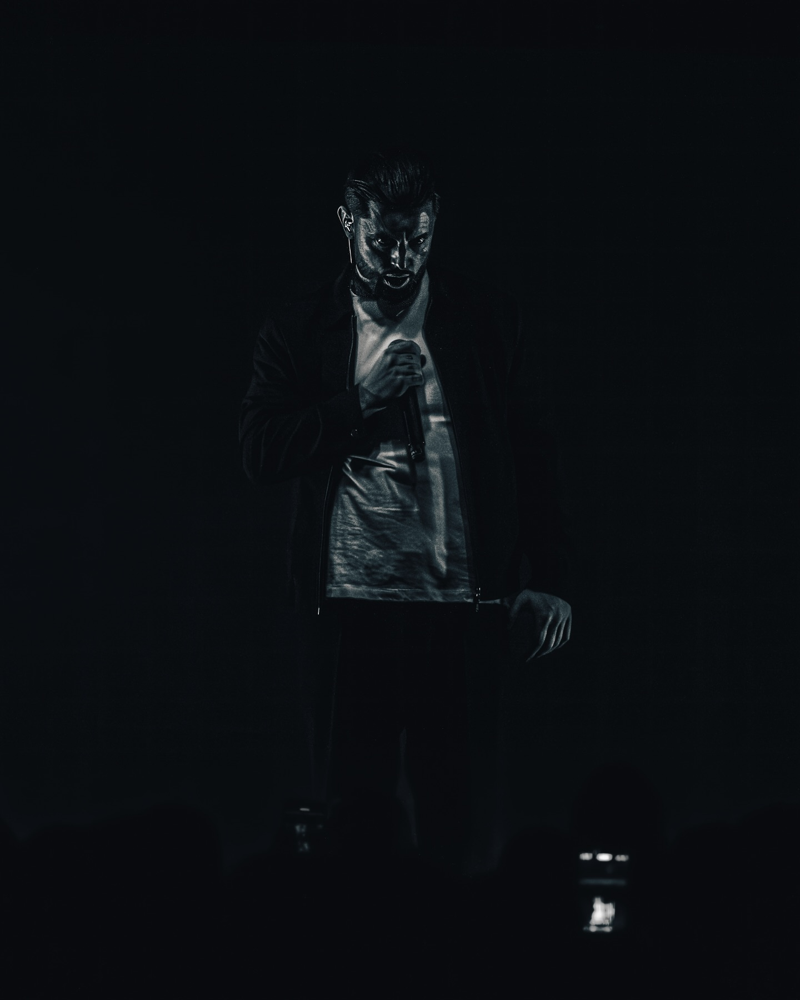
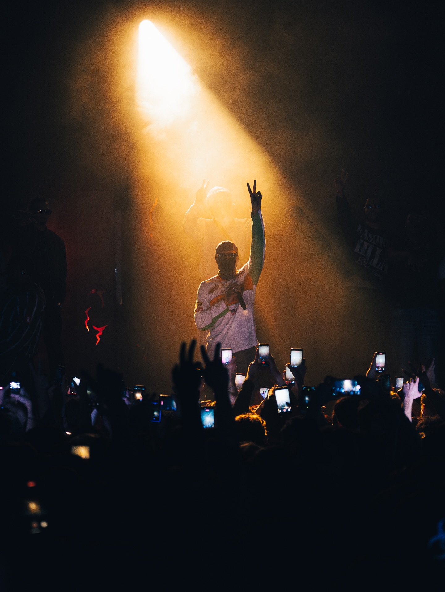
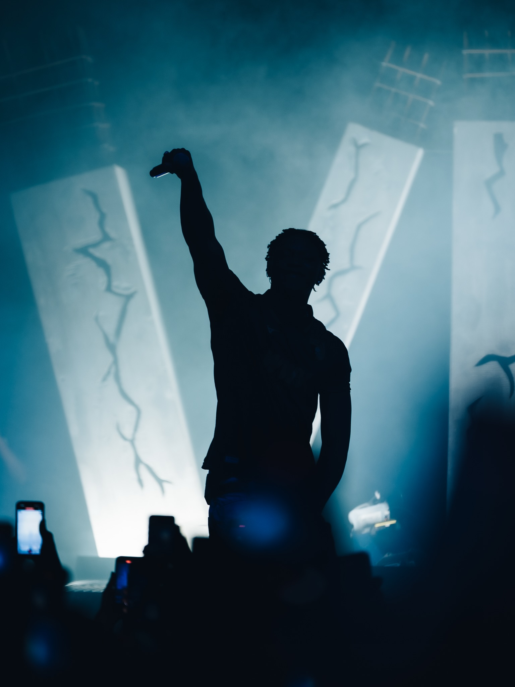
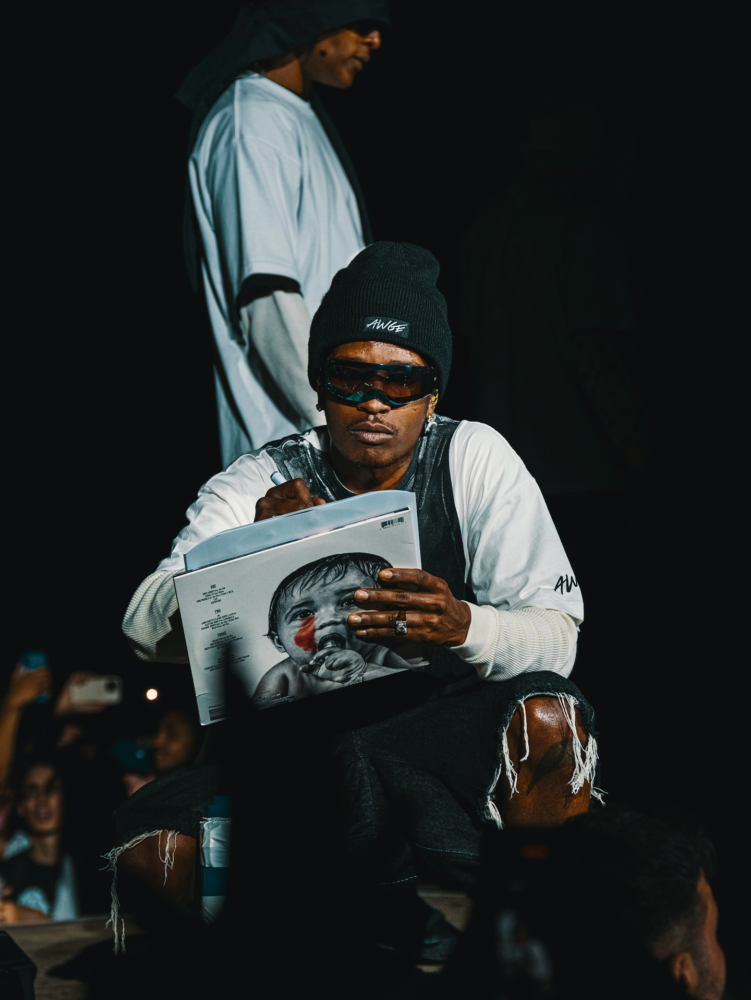
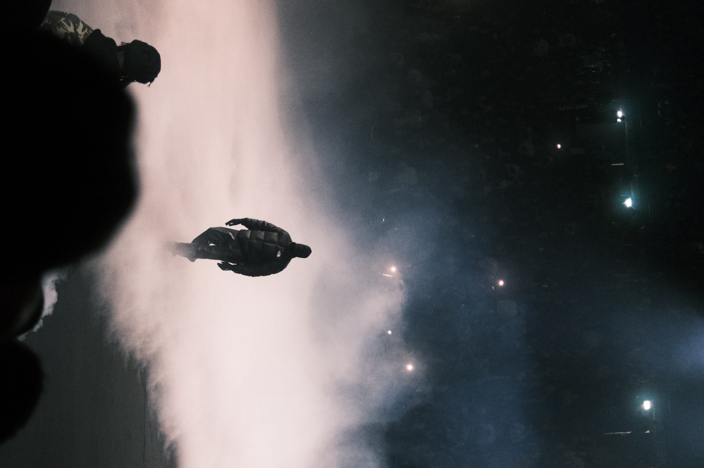
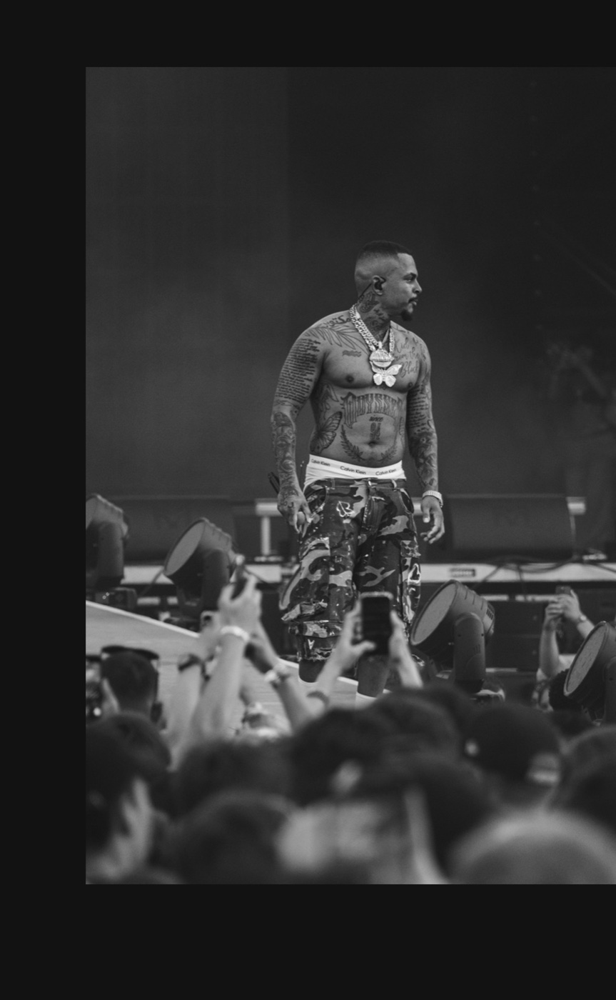
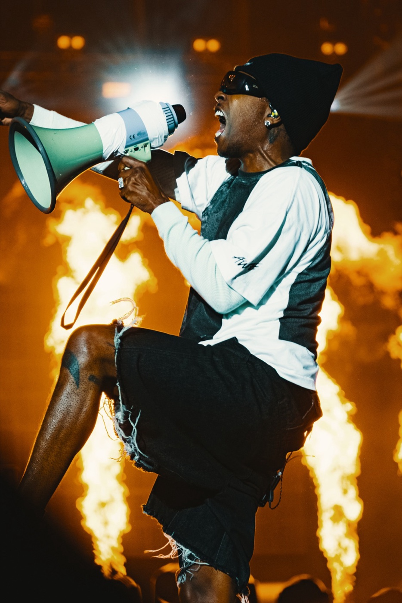
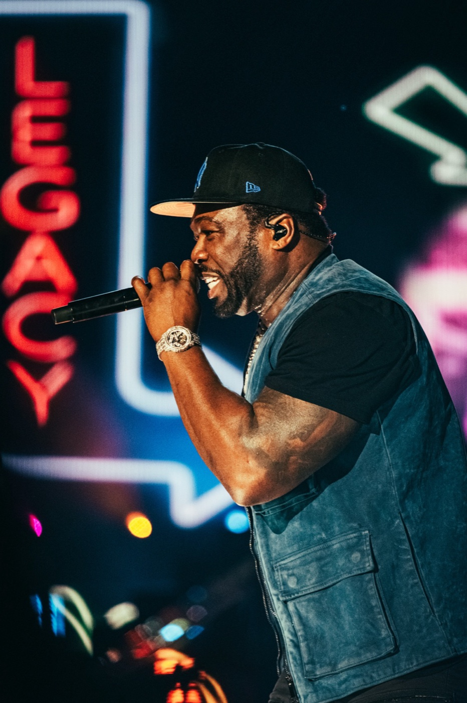
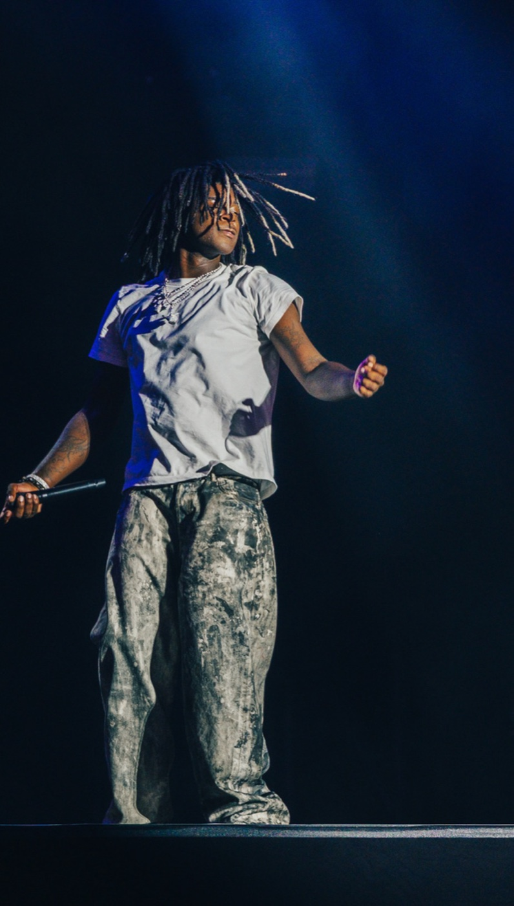

München · Fotograf
EVENT. KONZERT. SPORT.
Momente, die im Blitzlicht verschwinden würden — als Foto festgehalten, auf Wunsch auch im Video.
Ich bin Dane Junold — Fotograf aus München, auf Wunsch auch als Videograf buchbar. Ich fange die Energie von ausverkauften Konzerten, die Emotion im Sport und die Atmosphäre exklusiver Events ein. Kein gestelltes Lächeln, kein Studiolicht — echte Momente, roh und in Bewegung.
Portfolio


















Über mich
Seit Jahren bin ich als Fotograf dort unterwegs, wo Adrenalin, Bass und Emotion aufeinandertreffen — von der Bühne bis zum Spielfeldrand. Auf Wunsch halte ich die gleichen Momente auch als Videograf fest. Mein Ziel: den einen Moment einfangen, der die ganze Geschichte erzählt.
Ob ausverkaufte Konzerthalle, private Feier oder Stadion unter Flutlicht — ich arbeite schnell, unauffällig und mit einem Auge fürs Detail, damit ihr euch auf euren Moment konzentrieren könnt.
Projekt anfragen